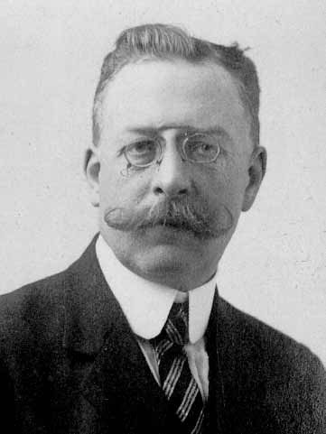

Epistemology:
Science & Tradition
Dr Shane V Crowley
Press down for controls and right to progress
Interacting with the Slides
üì∫Full screen: press the F key
üéÆView video controls: hover cursor over video
üë©‚Äçüé® Draw: click icon or press C
üåàPen colour: press X to cycle and Y to revert
üíÅ Options and Info: click icon or press M
The Omnivore's Dilemma
The Doctrine of Signatures
Problems with DoS
- Assumption: the world is made to serve us
- Scope: the theory has limited extension
- Easy-to-vary: DoS is highly subjective
DoS is better understood as a mnemonic than a theory
Obstacles to Knowledge

Obstacles to Knowledge

Kinds of Knowledge
Much knowledge of food is procedural
Science generates declarative knowledge
A feature of this knowledge is its generalisability
Generalisable Knowledge

Generalisable Knowledge

Traditional Know-how
Mac Con Iomaire, M. and P. Gallagher (2009). The Potato in Irish Cuisine and Culture. Journal of Culinary Science & Technology.The Irish had a peculiar way of cooking potatoes ‘with and without the bone or the moon’ [...] par boiling the potato leaving the core undercooked [...] The partially cooked potato lay in the stomach creating a second digestion period [...]
Scientific Know-why

Anti-science Rhetoric
Appeals to "common sense" knowledge of food
Conclusion
Next week: The science in 'food science'
shane.crowley@ucc.ie